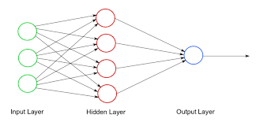

Neural Network

A neural network is a series of algorithms that attempt to detect basic relationships in a set of data through a process that mimics how the human brain works. In this sense, neural networks refer to neuron systems, which can be organic or synthetic environment.
Neural networks can adapt to changing input; so the network generates the best possible result without needing to redesign the output criteria. The concept of neural networks, which has its roots in artificial intelligence, is swiftly gaining popularity in the development of trading systems.There are two buliding blocks of neural networks namely layers and neurons

A neural network is made up of vertically stacked components called Layers.There are 3 types of layers that can be found in a neural network which the input layer,hidden layer and the output layer
The input layer is the that will be accepting input data in a neural network and it passes that data to the entire network.The input layer is the very beginning of the workflow for the artificial neural network.
The second layer is called the hidden layer.Hidden layers are either one or more in number for a neural network.Hidden layers are the ones that are actually responsible for the excellent performance and complexity of neural networks.Hidden layers are used to allowing a function of a neural network to be broken down into specific transformations of the data. Each hidden layer function is specialized to produce a defined output.
Output layer outputs the solution to the entire problem
A neuron is a mathematical function that model the functioning of a biological neuron. Usually, a neuron compute average of its input, and this sum is passed through a nonlinear function, often called activation function, such as the sigmoid.Neurons can belong to input layers , hidden layers or output layers.Input layer neurons recive the input data ,Output layer neurons receive inputs from previous layers, process them through new functions and outputs the expected results and Hidden layer neurons receive inputs from the input layers or by the previous hidden layer, pass them through new functions and send the result to the next layer neurons.
Neural networks are broadly used, with applications for financial operations, enterprise planning, trading, business analytics, and product maintenance. Neural networks have also gained widespread adoption in business applications such as forecasting and marketing research solutions, fraud detection, and risk assessment.
Like networks of neurons in the brain, computer neural networks can be either deep or shallow, meaning that they may consist of many layers or relatively few layers. In the first and second wave of neural networks in the 1970s and 1990s, neural networks were almost all shallow because computers were still too inadequate to do all the computation necessary for training deep neural networks.
Without sufficient training data, deep neural networks will give extremely poor results, often exceeded by other computer models with hand-engineered features. For this reason it was not until 2012 that deep neural networks first made a splash in either the research or commercial scene, when a deep neural network won the Imagenet image classification competition by a large margin.The amount of data needed to train deep neural networks can be truly immense, and in many commercial systems today it can take weeks or months of training to obtain adequate performance. This is even considering that networks are often trained in parallel across many highly optimized machines with specialized hardware such as ASICs and GPUs. This is a significant limitation of deep neural networks one could imagine the frustration of a deep learning engineer who learns only after weeks of expensive training that there was an error or bug in the design of the neural network that inhibited performance.

Without sufficient training data, deep neural networks will give extremely poor results, often exceeded by other computer models with hand-engineered features. For this reason it was not until 2012 that deep neural networks first made a splash in either the research or commercial scene, when a deep neural network won the Imagenet image classification competition by a large margin. The amount of data needed to train deep neural networks can be truly immense, and in many commercial systems today it can take weeks or months of training to obtain adequate performance. This is even considering that networks are often trained in parallel across many highly optimized machines with specialized hardware such as ASICs and GPUs. This is a significant limitation of deep neural networks – one could imagine the frustration of a deep learning engineer who learns only after weeks of expensive training that there was an error or bug in the design of the neural network that inhibited performance. Shallow neural networks It's worth noting that even shallow neural networks require relatively more training data than comparable computer models that may have hand-chosen features. This is because without a human in the loop to specify features by hand, more data will be needed by the computer to learn features that form an adequate representation of the problem. This will be true for any algorithm that learns end-to-end, not only neural networks.While there is a clear difference between shallow and deep neural networks, it's worth noting that it's a common process in machine learning engineering to scale up a shallow neural network or one with fewer weights to either a larger or deeper neural network.

In a shallow neural network, the values of the feature vector of the data to be classified (the input layer) are passed to a layer of nodes also known as neurons or units each of which generates a response according to some activation function, g, acting on the weighted sum of those values, z. The responses of each unit in the hidden layer is then passed to a final, output layer which may consist of a single unit, whose activation produces the classification prediction output.